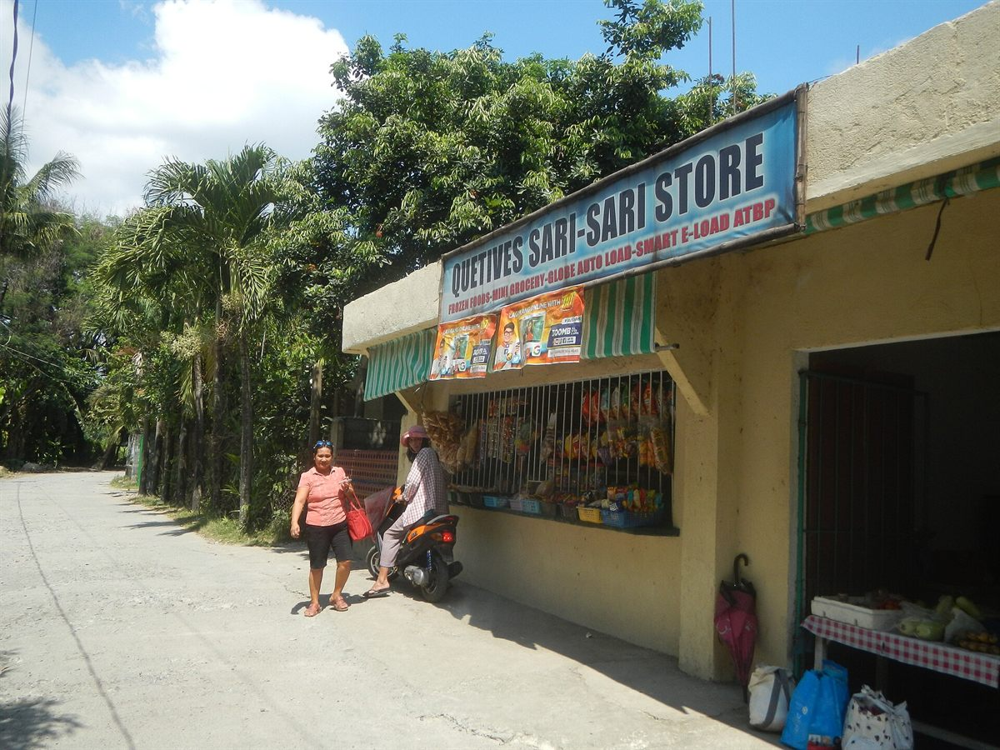
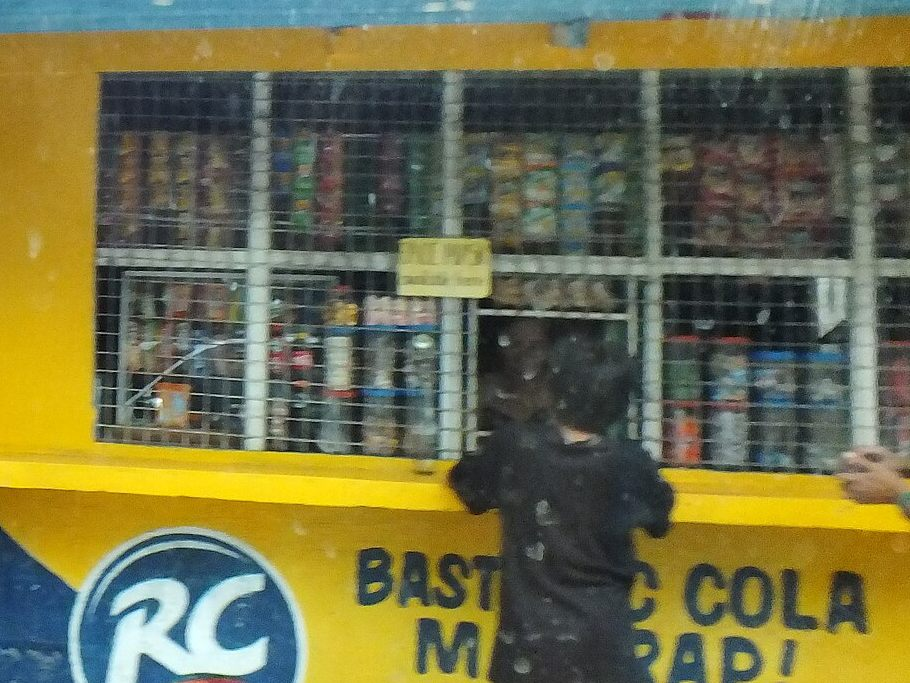
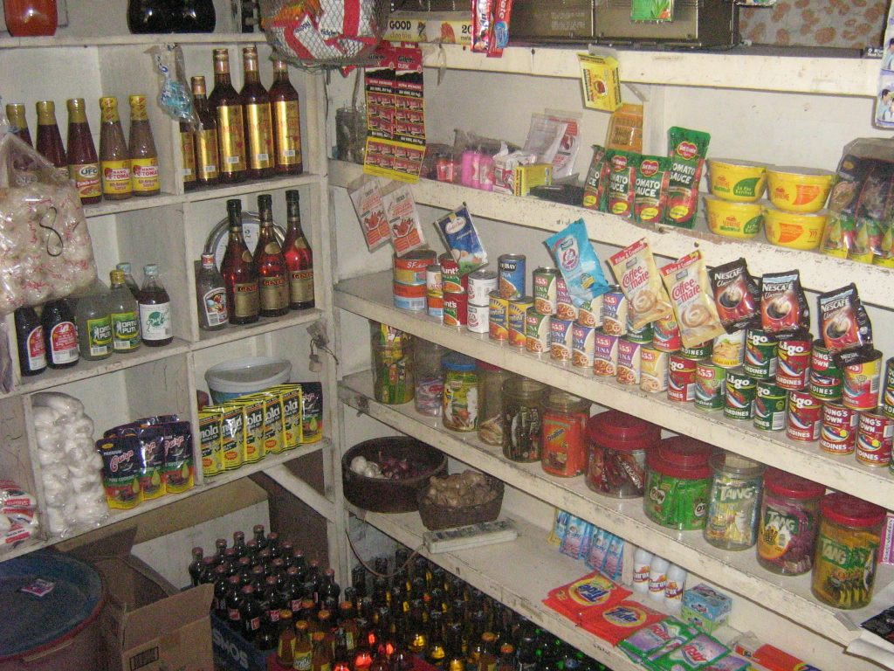
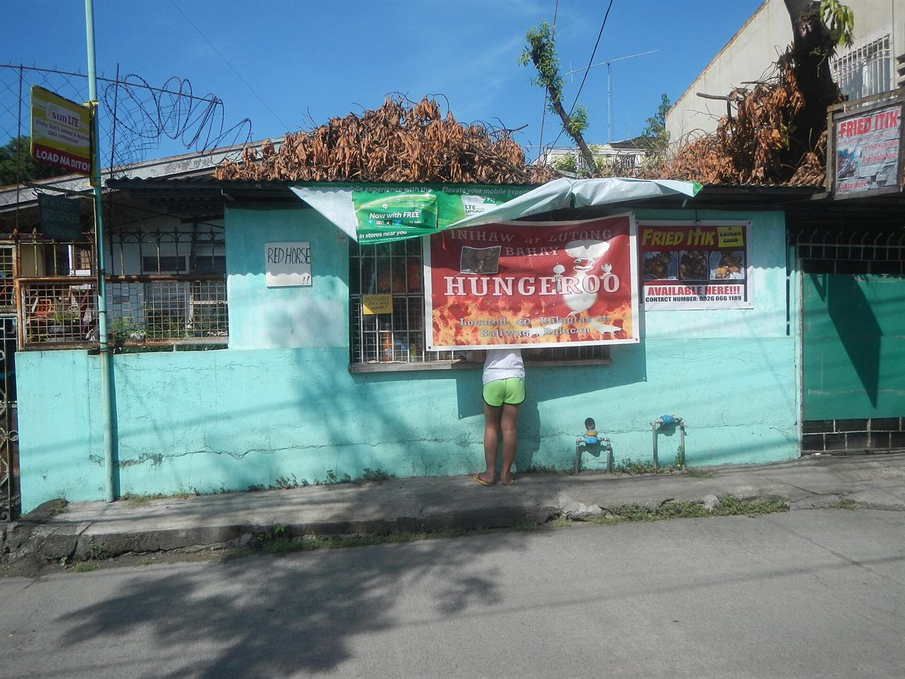
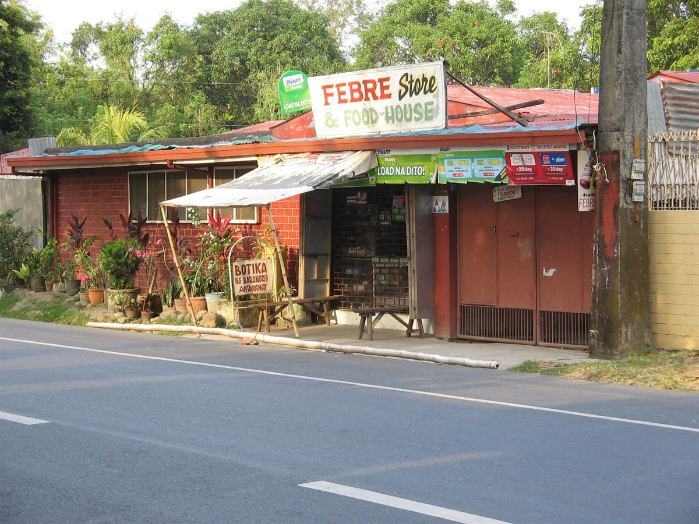

Lahat ng Paninda
Limang paninda, limang kwento. Every product on our shelves stands for one part of sari-sari store life. The one stamped Critique looks at its hard side.
The five stories
-
Tingi
Buying in small portions to get through one day at a time.
-
Utang
The listahan: credit built on trust between neighbors.
-
Tambayan
The store as the neighborhood’s news hub and meeting place.
-
Signs & labels
Hand-painted signs and loud packaging as vernacular design.
-
Sachet economy
Affordable today, plastic waste for a long time after.
Mga tindahan sa amin
Sari-sari stores around the Philippines, from openly licensed photos credited under each picture. Our own fieldwork photos will join them.
-

Ang harapan ng tindahan
Photo: Judgefloro · CC0 1.0 · Wikimedia Commons -

Ang rehas
Photo: PaulGorduiz106 · CC BY-SA 4.0 · Wikimedia Commons · cropped -

Ang mga paninda
Photo: Exec8 at English Wikipedia · Public domain · Wikimedia Commons -
Planned photo: The tindera at the counter (with permission)
Ang tindera
-

Ang karatula
Photo: Judgefloro · CC0 1.0 · Wikimedia Commons -

Ang tambayan
Photo: Kuya Frank · CC BY-SA 3.0 · Wikimedia Commons

.jpg){kind=link}